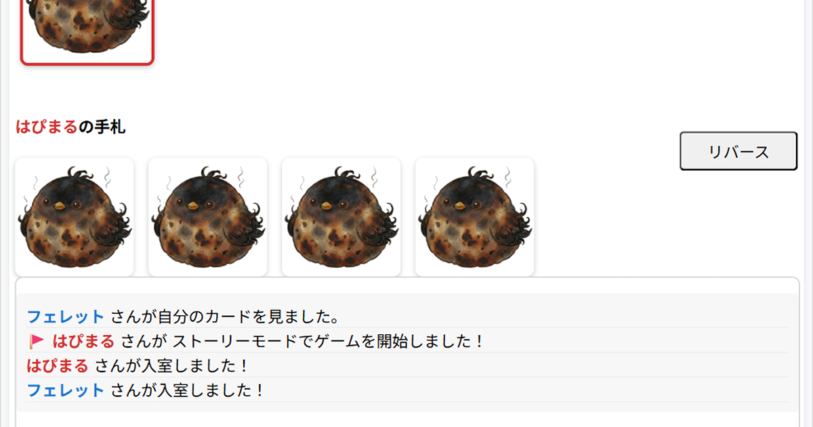

[26.5.20] ストーリーモードを使ってできる！
既存ゲームのバリエーション ～文デッキ編～

MOCHICOTORI(モチコトリ)
⇗ ゲームはこちらからプレイできます
前書き
2026.5.20、ストーリーモードにフェイスダウンオプションを追加しました。実はこれはストーリーモードのためのオプションじゃなく、まさにそのシステムを使いまわして新しいゲームや既存のゲームを遊ぶためのものなのだ！MOCHICOTORIの4モードの中でダントツの柔軟性を持つストーリーモード。この記事ではそいつを活かして遊べるゲームを紹介してゆくｿﾞ
※本家のクオリティには劣るところも多々あるけどご愛嬌ということで。手軽に色々つまめる駄菓子感覚でご利用ください。
※この記事では文デッキを使うゲームを扱います。画像デッキを使うものはこちら。
ストーリーモードを使ってできる！既存ゲームのバリエーション
欠けありインサイダーゲーム
プレイ人数：3～6人
仕様上マスターが観戦からお題を投げ入れることはできないところを、逆に欠けとして利用するという寸法だ。
マスターが文デッキをセットしてゲーム開始を押す
○○(あなたはインサイダーです) あなたは庶民です あなたは庶民です あなたは庶民です あなたは庶民です あなたは庶民です
マスターがインサイダーの場合、インサイダー欠けになる。欠けだと思ったらマスターに投票しよう(平和村)。
マスターも吊り会議・投票に参加できる。欠けと言っても人狼の欠けとは違って、結局マスターも含めてインサイダーがどこにいるか探す構図は変わってないし、マスターも庶民になろうとインサイダーになろうとガッツリプレイヤーとしてもゲームを楽しめるから実質欠けてないともいえる。[PR]アマゾン

オインクゲームズ インサイダー・ゲーム
あなたは、操られている。 クイズと正体探し、ふたつの楽しさが絶妙にマッチした、短時間でみんなが盛り上がれる会話ゲーム。会話で進めていくクイズの中、陰で議論を思い通りに操作している狡猾なインサイダーが紛れこんでいます。インサイダーは、正体を隠しながら世論をうまく導こうとしているのです....！
[PR] Amazon.co.jpで見る欠けありワードウルフ
プレイ人数：4～6人
欠けありインサイダーゲームと同様、こちらもGMに配られた陣営が欠ける。
GMが文デッキをセットしてゲーム開始を押します
○○ ○○ ○○ ○○ ○○(または××) ××
GMがウルフの場合、ウルフ欠けになる。GMはゲーム開始時にウルフの数を宣言してから開始ボタンを押そう。1ウルフの場合はGMに投票することもできる(平和村)。2ウルフの場合は、GMがウルフだと思ってもGM以外のウルフを探してもらおう。もちろん欠けありインサイダーゲームと違って、GMはウルフだったとしても逆転チャンスには参加できないし、吊り会議にも参加できない。マジで欠け。投票権もない✌︎︎(´ °∀︎°`)✌︎︎ [PR]アマゾン

幻冬舎(Gentosha) カードゲーム ワードウルフ 2〜8人用
会話から少数派(ワードウルフ)を探し出す正体隠匿ゲーム! 約5分で推理と駆け引きの醍醐味が味わえる! 共通のお題が配られた多数派(市民)に対し、微妙にちがうお題が配られた少数派(ワードウルフ)を、話し合いのなかから見つけ出します。 話のズレから正体を見抜く市民と、話を合わせて紛れるワードウルフの疑心暗鬼バトル。
[PR] Amazon.co.jpで見るオリジナルお題エモラン(✅フェイスダウン)
プレイ人数：3～6人
❶位 ❷位 ❸位 ❹位 ❺位 ❻位
プレイヤー順がランダムになるから、左から1人目:親、2人目:「○○(状況)で」、3人目:「××(感情)なことランキング」を担当
2人目と3人目はお題を決めて、一斉に発表する。親はリバースを押さずにカードを出してゲーム開始だ。
子はリバースを押したら、誰がなんのカードを持っているかを言わずに、自分の順位相当の「○○で××なこと」を考えて、親から順番に発表していく(親は自分の順位が分からないから、真ん中くらいのイメージで発表)。全員発表し終えたら、最後に親は誰が何位か推理して、自分の順位を当てられたら成功！[PR]アマゾン

JELLYJELLYGAMES エモラン 3~6人用 パーティーゲーム
その感情に順位をつけよう！ 「運動会で」「はずかしいこと」などのテーマに沿った答えを全員が書き、親プレイヤーはそれぞれの回答を感情の度合いで順位づけしていきます。 はたして狙い通りの順位に選ばれることができるでしょうか？ みんなの意外な価値観が明らかになる、盛り上がること間違いなしの新感覚パーティーゲームです！
[PR] Amazon.co.jpで見るトランプ・ザ・マインド(✅フェイスダウン)
プレイ人数：1～6人
A♢ A♡ A♣ A♠ 2♢ 2♡ 2♣ 2♠ 3♢ 3♡ 3♣ 3♠ 4♢ 4♡ 4♣ 4♠ 5♢ 5♡ 5♣ 5♠ 6♢ 6♡ 6♣ 6♠ 7♢ 7♡ 7♣ 7♠ 8♢ 8♡ 8♣ 8♠ 9♢ 9♡ 9♣ 9♠ 10♢ 10♡ 10♣ 10♠ J♢ J♡ J♣ J♠ Q♢ Q♡ Q♣ Q♠ K♢ K♡ K♣ K♠ JOKER JOKER ―OPEN→ ―OPEN→ ⇐× ⇐× ♡♣♠ ♡♣♠ ♢♣♠ ♢♣♠ ♢♡♠ ♢♡♠ ♢♡♣ ♢♡♣ ODD♢♡ ODD♢♡ ODD♣♠ ODD♣♠ EVEN♢♡ EVEN♢♡ EVEN♣♠ EVEN♣♠ A23456 A23456 A234567 A234567 89TJQK 89TJQK 789TJQK 789TJQK
2人以上で遊ぶときは、1人だけカードを伏せたままプレイする(参加者順がランダムで決まるから、1番左だった人がそうするとしてもいいし、今回は誰が伏せると決めてからはじめてもOK！)。無言で、自由なタイミングでカードを出していく。前のカードと同じ数字かスートを含む限りゲームは続いていく。全員が全部出しきれたら成功！ジョーカーは何にでも繋がる(A♠ → JOKER → 7♡とかもOK。JOKERは何かのカードの代わりになるのではなく、文字通り何にでもつながる)から、ゲームの最初やジョーカーがでたときは、フェイスダウンのプレイヤーはすかさず提出していこう！フェイスダウンのプレイヤーをなしにしたり、いいねボタンで非言語コミュニケーションを試みたり、1ゲームにつき1人1回ずつとか取り決めて手札交換を採用してみても面白いね。時間のイメージがしやすいように、制限時間を設けるのもオススメ。プレイ人数×1分くらいがちょうどよさそう
1人で遊ぶときは、制限時間制にするのもいいけど、タイムアタックがオススメだ(*•̀ᴗ•́*)و ̑̑
特殊カードの説明
―OPEN→ ：フェイスダウンプレイヤーはリバースを押してカードを見れる。JOKERのようにワイルドカードにはならないから、次のカードはこれの前からつなげる必要がある。これをフェイスダウンプレイヤーが出した場合、「他のプレイヤーが教えてあげられる」とするのもありだし、「フェイスダウンプレイヤーは自由なタイミングでリバースを押していいけど、―OPEN→が出てなかったら反則により失敗になる」とするのもあり！
⇐ × ：一つ前のカードは無効！誰かがこれを持ってるかもしれないから、失敗したと思ってもすぐに声を出さないようにしよう。
♡♣♠など ：♡♣♠の場合、数字はない。一つ前から引き継ぐわけじゃないから、A♠ → ♡♣♠ → A♢とかはつながらない。あと、A23456 → ODD♢♡はつながる。A23456の中に奇数があるから。
✄---------ｷ ﾘ ﾄ ﾘ ---------✄
「普通のでいいんですケド...」という方向け ⇓ 手札5枚になるけど。それでよければ"ito"も遊べるね
1 2 3 4 5 6 7 8 9 10 11 12 13 14 15 16 17 18 19 20 21 22 23 24 25 26 27 28 29 30 31 32 34 35 36 37 38 39 40 41 42 43 44 45 46 47 48 49 50 51 52 53 54 55 56 57 58 59 60 61 62 63 64 65 66 67 68 69 70 71 72 73 74 75 76 77 78 79 80 81 82 83 84 85 86 87 88 89 90 91 92 93 94 95 96 97 98 99 100

アークライト ザ・マインド 日本語版 (2-4人用 20分 8才以上向け) ボードゲーム
集中力を高めて全員の心をシンクロさせる、独創的な協力型ゲームが日本語版で登場。 『ザ・マインド』は普通のゲームではありません。 プレイヤーは1つのチームとして「己」に挑戦します。 プレイヤーはラウンド(レベル)ごとに指定された枚数の手札を、カードの番号が昇順になるように捨て山にプレイしていきます。 このゲームでは手番がプレイヤー間をめぐる順番が一定ではなく、「いま手札を出したい」と思ったプレイヤーが手番を行います。 そのとき、だれがいつ手番を行うかということについて相談してはなりません。 各プレイヤーが第六感を研ぎ澄まし、全員が手札を正しい順でプレイしきると見事そのレベルをクリアとなり、次のレベルへと進みます。 クリアするためには手札を出す前に集中することが重要となるでしょう。 あなたが最後のレベルを乗り越えたとき、全員の心がシンクロし、その精神は至上へと達するのです。
[PR] Amazon.co.jpで見る
アークライト ito (イト) レインボー (2-14人用 5-15分 8才以上向け) ボードゲーム
数字を言葉で「たとえる」だけで、こんなにも盛り上がる。メディア紹介多数。 累計発行10万部以上の『ito』に、これ一箱で遊べる新たな"レインボー"が誕生。 『ito レインボー』は、自分の数字カードをお題に沿った言葉で「たとえ」て、小さい順に並べる協力ゲームです。 ただし、数字を直接言うのはNG。 みんなの「たとえ」を比べる中で、相手の”意図”をうまく汲みとれるでしょうか!? 伝わりそうで伝わらない、もどかしさも面白いパーティーゲームです。 これ一箱で、基本モード『クモノイト2.0』と、対戦＆協力モード『ニジノイト』の2種類のモードが遊べます。
[PR] Amazon.co.jpで見る